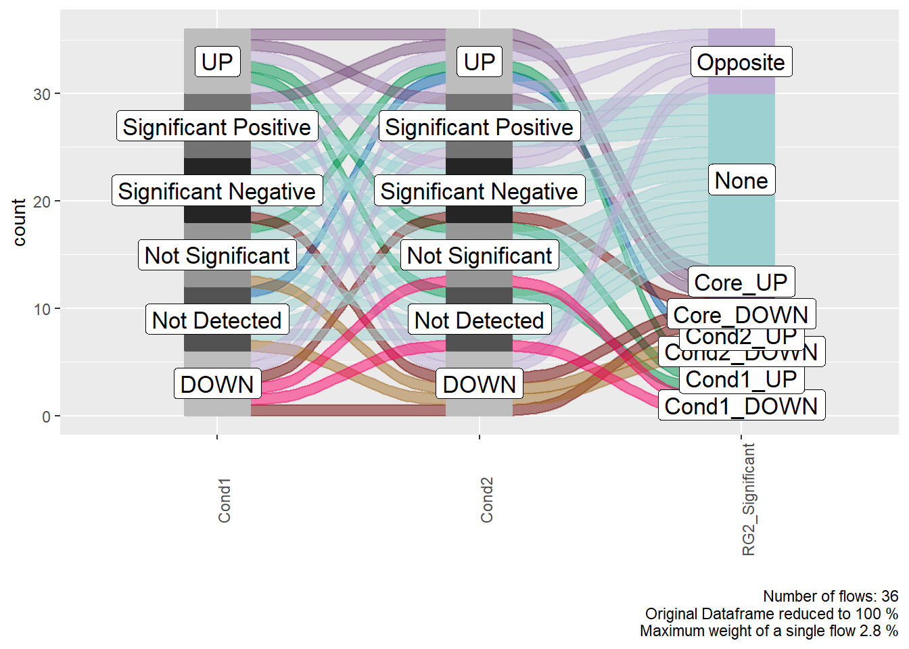
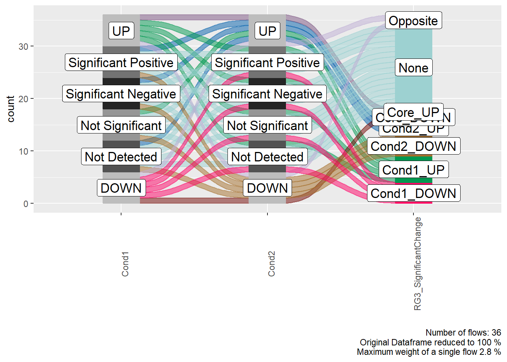

Browse source
code View on
Bioconductor Citing
MetaProViz FrezzaLab
SaezLab
Standard metabolomics
A standard metabolomics experiment refers to intracellular extracts
(e.g. cell or bacteria culture), to tissue samples (e.g. from animals or
patients), to plasma samples (e.g. blood) and many other types of
experimental setups.
In this tutorial we showcase how
to use MetaProViz:
1. To process raw peak data and identify outliers.
2. To perform differential metabolite analysis (DMA) to
generate Log2FC and statistics.
3. To do metabolite clustering analysis (MCA) to find
clusters of metabolites with similar behaviours.
4. To use specific visualisations to aid biological
interpretation of the results.
First if you have not done yet, install the required dependencies and
load the libraries:
#MetaProViz
#library(MetaProViz)
#dependencies
library(tidyverse)1. Loading the example data
Here we choose an example datasets, which is publicly available on metabolomics
workbench project PR001418 including metabolic profiles of human
renal epithelial cells HK2 and cell renal cell carcinoma (ccRCC) cell
lines cultured in Plasmax cell culture media. Here we use the integrated
raw peak data as example data using the trival metabolite name in
combination with the KEGG ID as the metabolite identifiers.
As part of the
MetaProViz package you can load the example data into
your global environment using the function
toy_data():
1. Intracellular experiment (Intra)
The raw data are available via metabolomics
workbench study ST002224 were intracellular metabolomics of HK2 and
ccRCC cell lines 786-O, 786-M1A and 786-M2A were performed.
# check load data again from inst/extdata
devtools::load_all("C:/Users/chris/Documents/GitHub/MetaProViz")#only loaded until package is online
#> ℹ Loading MetaProViz
MetaProViz::toy_data(data="Standard")
#test <- load(MS51_RawPeakData.csv)#I need to save it as .RDS file to load it from there
#saveRDS(globalenv(), "C:/Users/chris/Documents/GitHub/MetaProViz/inst/extdataStandard.rds")
# Check how our data looks like:
knitr::kable(Intra[1:5, 1:7], caption = "Preview of the DF `Intra` including columns with sample information and metabolite ids with their measured values.")| Code | Conditions | Analytical_Replicates | Biological_Replicates | valine-d8 | hippuric acid-d5 | 2/3-phosphoglycerate |
|---|---|---|---|---|---|---|
| MS55_01 | HK2 | 1 | 1 | 1910140239 | 4155279397 | 39391514 |
| MS55_02 | HK2 | 2 | 1 | 2030901280 | 4238215810 | 42341710 |
| MS55_03 | HK2 | 3 | 1 | 2001950756 | 4197553754 | 44519478 |
| MS55_04 | HK2 | 4 | 1 | 1971520079 | 4322171919 | 38994961 |
| MS55_05 | 786-O | 1 | 1 | 2150817213 | 4297449325 | 41381177 |
2. Pathway information mapping the trivial metabolite names
to KEGG IDs and pathways (Pathways)
MetaProViz::toy_data(data="Pathways")
# Check how our data looks like:
knitr::kable(Pathways[1:5,], caption = "Preview of the DF `Pathways` including the trivial metabolite identifiers used in the experiment as well as KEGG IDs and pathway information.")| Metabolite | KEGG.ID | KEGGCompound | Pathway |
|---|---|---|---|
| N-acetylaspartate | C01042 | N-Acetyl-L-aspartate | Alanine, aspartate and glutamate metabolism |
| argininosuccinate | C03406 | N-(L-Arginino)succinate | Alanine, aspartate and glutamate metabolism |
| N-acetylaspartylglutamate | C12270 | N-Acetylaspartylglutamate | Alanine, aspartate and glutamate metabolism |
| creatinine | C00791 | Creatinine | Arginine and proline metabolism |
| 4-guanidinobutanoate | C01035 | 4-Guanidinobutanoate | Arginine and proline metabolism |
We will split the experimental data into the sample information and the
metabolites values using the the column “Code” as the unique
identifier:
Intra_M <- Intra[1:47,-c(2:4)]%>%
column_to_rownames("Code")
SampleInfo <-Intra[c(1:47),c(1:4)]%>%
column_to_rownames("Code")2. Run MetaProViz functions
Currently, MetaProViz contains four different modules, which include different methods and can be used independently from each other or in combination (see introduction for more details). Here we will go trough each of those modules and apply them to example data.
2.1. Pre-processing
MetaProViz includes a pre-processing module with the
function Preprocessing() that has multiple parameters to
perform customize data processing.
Feature_Filtering applies the 80%-filtering rule on the
metabolite features either on the whole dataset (=“Standard”) (Bijlsma
S. et al., 2006) or per condition (=“Modified”) (Yang, J et al., 2015).
This means that metabolites are removed were more than 20% of the
samples (all or per condition) have no detection. With the parameter
Feature_Filt_Value we enable the adaptation of the
stringency of the filtering based on the experimental context. For
instance, patient tumour samples can contain many unknown subgroups due
to gender, age, stage etc., which leads to a metabolite being detected
in only 50% (or even less) of the tumour samples, hence in this context
it could be considered to change the Feature_Filt_Value
from the default (=0.8). If Feature_Filtering = "None", no
feature filtering is performed. In the context of
Feature_Filtering it is also noteworthy that the function
Pool_Estimation can be used to estimate the quality of the
metabolite detection and will return a list of metabolites that are
variable across the different pool (mixture of all experimental samples
measured several times during the LC-MS run) measurements and hence the
quality of the detection is poor and hence the metabolite should be
removed from the data.
The paramteter TIC_Normalization refers to Total Ion Count
(TIC) normalisation, which is often used with LC-MS derived metabolomics
data. If TIC_Normalization = TRUE, each feature
(=metabolite) in a sample is divided by the sum of all intensity value
(= total number of ions) for the sample and finally multiplied by a
constant ( = the mean of all samples total number of ions). Noteworthy,
TIC normalisation should not be used with small number of features (=
metabolites), since TIC assumes that on “average” the ion count of each
sample is equal if there were no instrument batch effects (Wulff et.
al., (2018)).
The parameter MVI refers to Missing Value Imputation (MVI)
and if MVI = TRUE half minimum (HM) missing value
imputation is performed per feature (= per metabolite). Here it is
important to mention that HM has been shown to perform well for missing
vales that are missing not at random (MNAR) (Wei et. al., 2018 ,https://www.nature.com/articles/s41598-017-19120-0).
Lastly, the function Preprocessing() performs outlier
detection and add a column “Outliers” into the DF, which can be used to
remove outliers. The parameter HotellinsConfidence can be
used to choose the confidence intervall that should be used for the
Hotellins T2 outlier test (Hotelling, H., 1931, doi:https://doi.org/10.1214/aoms/1177732979.).
Notes on MVI: - Wei quantile regression imputation of left-censored data
(QRILC) as performing best even though HM performs better in some of
their tests and quantile normalisation would not work well for normal
distribution! - Show MVI results with different percentages (not just
50% as per half minimum!) –> implement parameter for user to change?
- Show that per feature imputation is advantageous over the “standard”
imputation –> change standard to per feature!
Now we will apply the Preprocessing() function to example
data and have a look at the output produced. You will notice that all
the chosen parameters and results are documented in messages:
#Do the pool control first!
PPres <- MetaProViz::Preprocessing(Input_data=Intra_M,
Experimental_design=SampleInfo,
Feature_Filtering = "Modified",
Feature_Filt_Value = 0.8,
TIC_Normalization = TRUE,# As we have raw data we will perform total ion count normalisation
MVI=TRUE, #We assume the values are not mising at random and perform half minimum missing value imputation
HotellinsConfidence = 0.99,# We perform outlier testing using 0.99 confidence intervall
ExportQCPlots = TRUE,# we will save the quality control plots
CoRe = FALSE,# as we have a standard experiment and not a Consumption-Release (CoRe) experiment we set this to FALSE
Save_as = "svg") #we will save the QC plots as .svg files
#> Here we apply the modified 80%-filtering rule that takes the class information (Column `Conditions`) into account, which additionally reduces the effect of missing values. REF: Yang et. al., (2015), doi: 10.3389/fmolb.2015.00004)
#> filtering value selected: 0.8
#> ***Performing modified feature filtering***
#> 3 metabolites where removed: AICAR, FAICAR, SAICAR
#> Missing value imputation is performed, as a complementary approach to address the missing value problem, where the missing values are imputing using the `half minimum value`. REF: Wei et. al., (2018), Reports, 8, 663, doi:https://doi.org/10.1038/s41598-017-19120-0
#> Total Ion Count (TIC) normalization is used to reduce the variation from non-biological sources, while maintaining the biological variation. REF: Wulff et. al., (2018), Advances in Bioscience and Biotechnology, 9, 339-351, doi:https://doi.org/10.4236/abb.2018.98022
#> Identification of outlier samples is performed using Hotellin's T2 test to define sample outliers in a mathematical way (Confidence = 0.99 ~ p.val < 0.01) REF: Hotelling, H. (1931), Annals of Mathematical Statistics. 2 (3), 360–378, doi:https://doi.org/10.1214/aoms/1177732979.
#> HotellinsConfidence value selected: 0.99
#> ***Checking for outliers***
#> ***Checking for outliers***
#> There are possible outlier samples in the data
#> Filtering round 1 Outlier Samples: MS55_29
#> Done
Intra_Preprocessed <- PPres[["Processed_data"]]
# Check how our data looks like:
knitr::kable(Intra_Preprocessed[29:32, 1:7]%>%rownames_to_column("Code"), caption = "Preview of the pre-processing results, which has an additional column `Outlier` including the results of Hotellins T2.", row.names=FALSE)| Code | Conditions | Analytical_Replicates | Biological_Replicates | Outliers | valine-d8 | hippuric acid-d5 | 2/3-phosphoglycerate |
|---|---|---|---|---|---|---|---|
| MS55_29 | 786-M2A | 1 | 2 | Outlier_filtering_round_1 | 2389973416 | 4573651797 | 40224280 |
| MS55_30 | 786-M2A | 2 | 2 | no | 2131636596 | 3913339135 | 40942211 |
| MS55_31 | 786-M2A | 3 | 2 | no | 2010263314 | 3823948533 | 45701915 |
| MS55_32 | 786-M2A | 4 | 2 | no | 2025373868 | 3812717059 | 46212138 |
In the output table you can now see the column “Outliers” and for the Condition 786-M2A, we can see that based on Hotellin’s T2 test, one sample was detected as an oulier in the first round of filtering.
As part of the
Preprocessing() function several results are
saved including quality control plots are saved, which we can further
check for the outlier:

Now we will remove the outlier before proceeding:
Intra_Preprocessed <- Intra_Preprocessed[-29,]#remove MS55_29
As you may have noticed, in this example dataset we have several
biological replicates that where injected (=measured) several times,
which can be termed as analytical replicates. The
MetaProViz pre-processing module includes the function
ReplicateSum, which will do this task and save the
results:
Intra_Preprocessed <- MetaProViz::ReplicateSum(Input_data=Intra_Preprocessed)
#> Done2.2. DMA
Differential Metabolite Analysis (DMA) between two
conditions (e.g. Tumour versus Healthy) calculates the Log2FC, p-value,
adjusted p-value and t-value. With the different parameters of the
DMA function one can choose the statistical tests to
calculate the p-value and adjusted p-value (STAT_pval and
STAT_padj).
Notes DMA: The input can either be the output of the
Preprocessing module or any DF including metabolite values
and information about the conditions that should be compared. explain
the way we deal with 0/NA –> again refer back to above! Similar to
DESEq2 explain what it means if a Log2FC = Inf & p.val=NA versus
Log2FC= Value & p.val=NA
In the example data we have four different cell lines, healthy (HK2) and
cancer (ccRCC: 786-M1A, 786-M2A and 786-O) and hence we can perform
mutliple different comparisons:
DMA_HK2v786O <- MetaProViz::DMA(Input_data=Intra_Preprocessed[,-c(1:3)], #we need to remove columns that do not include metabolite measurements
Experimental_design=Intra_Preprocessed[,c(1:2)],#we only maintain the information columns we need here
Condition1="HK2",
Condition2="786-O",
STAT_pval ="t.test",
STAT_padj="fdr",
Input_Pathways = Pathways[,c(1,4)],
OutputName='DMA_HK2v786O',
CoRe=FALSE,
Plot = TRUE,
Save_as = "svg")
#> There are no NA/0 values
#> 79.89 % of the metabolites follow a normal distribution and 20.11 % of the metabolites are not-normally distributed according to the shapiro test. `shapiro.test` ignores missing values in the calculation.
# Check how our data looks like:
knitr::kable(DMA_HK2v786O[1:6,], caption = "Preview of the DMA results for the comparison of HK2 versus 786-O cells.", row.names=FALSE)| Metabolite | Log2FC | p.val | p.adj | t.val | Pathway |
|---|---|---|---|---|---|
| 2-aminoadipic acid | -0.4171492 | 0.0417030 | 0.0794131 | -2.0364722 | Not assigned |
| 2-hydroxyglutarate | -0.9161858 | 0.0026323 | 0.0142571 | -3.0077003 | Not assigned |
| 2-ketoglutarate | -1.3589969 | 0.0009498 | 0.0080963 | -3.3049760 | Citrate cycle (TCA cycle) |
| 2/3-phosphoglycerate | -0.0566840 | 0.6623858 | 0.7504245 | -0.4366215 | Glycolysis / Gluconeogenesis |
| 4-guanidinobutanoate | 1.0099082 | 0.0048373 | 0.0166516 | 2.8176711 | Arginine and proline metabolism |
| 4-hydroxyphenyllactate | 0.9472270 | 0.0001368 | 0.0034989 | 3.8138313 | Not assigned |
#Perform the other comparisons;
DMA_HK2v786M1A <- MetaProViz::DMA(Input_data=Intra_Preprocessed[,-c(1:3)], #we need to remove columns that do not include metabolite measurements
Experimental_design=Intra_Preprocessed[,c(1:2)],#we only maintain the information columns we need here
Condition1="HK2",
Condition2="786-M1A",
STAT_pval ="t.test",
STAT_padj="fdr",
Input_Pathways = Pathways[,c(1,4)],
OutputName='DMA_HK2v786M1A',
CoRe=FALSE,
Plot = TRUE,
Save_as = "svg")
#> There are no NA/0 values
#> 79.89 % of the metabolites follow a normal distribution and 20.11 % of the metabolites are not-normally distributed according to the shapiro test. `shapiro.test` ignores missing values in the calculation.
DMA_HK2v786M2A <- MetaProViz::DMA(Input_data=Intra_Preprocessed[,-c(1:3)], #we need to remove columns that do not include metabolite measurements
Experimental_design=Intra_Preprocessed[,c(1:2)],#we only maintain the information columns we need here
Condition1="HK2",
Condition2="786-M2A",
STAT_pval ="t.test",
STAT_padj="fdr",
Input_Pathways = Pathways[,c(1,4)],
OutputName='DMA_HK2v786M2A',
CoRe=FALSE,
Plot = TRUE,
Save_as = "svg")
#> There are no NA/0 values
#> 85.47 % of the metabolites follow a normal distribution and 14.53 % of the metabolites are not-normally distributed according to the shapiro test. `shapiro.test` ignores missing values in the calculation.Why are the plots not shown? –> mention/show that the volcano plot is saved when Plot=TRUE
2.3. MCA
Metabolite Clustering Analysis (MCA)is a module
Create Figure (alluvial plot) explaining the general concept –> usable for manuscript as well
#Example of all possible flows:
MetaProViz::MCA_rules(data="2Cond")
# Check how our data looks like:
knitr::kable(MCA_2Cond, caption = "Metabolite Clustering Analysis: 2 Conditions.", row.names=FALSE)| Cond1 | Cond2 | RG1_All | RG2_Significant | RG3_SignificantChange |
|---|---|---|---|---|
| DOWN | DOWN | Cond1 DOWN + Cond2 DOWN | Core_DOWN | Core_DOWN |
| DOWN | Not Detected | Cond1 DOWN + Cond2 Not Detected | Cond1_DOWN | Cond1_DOWN |
| DOWN | Not Significant | Cond1 DOWN + Cond2 Not Significant | Cond1_DOWN | Cond1_DOWN |
| DOWN | Significant Negative | Cond1 DOWN + Cond2 Significant Negative | Core_DOWN | Cond1_DOWN |
| DOWN | Significant Positive | Cond1 DOWN + Cond2 Significant Positive | Opposite | Cond1_DOWN |
| DOWN | UP | Cond1 DOWN + Cond2 UP | Opposite | Opposite |
| UP | DOWN | Cond1 UP + Cond2 DOWN | Opposite | Opposite |
| UP | Not Detected | Cond1 UP + Cond2 Not Detected | Cond1_UP | Cond1_UP |
| UP | Not Significant | Cond1 UP + Cond2 Not Significant | Cond1_UP | Cond1_UP |
| UP | Significant Negative | Cond1 UP + Cond2 Significant Negative | Opposite | Cond1_UP |
| UP | Significant Positive | Cond1 UP + Cond2 Significant Positive | Core_UP | Cond1_UP |
| UP | UP | Cond1 UP + Cond2 UP | Core_UP | Core_UP |
| Not Detected | DOWN | Cond1 Not Detected + Cond2 DOWN | Cond2_DOWN | Cond2_DOWN |
| Not Detected | Not Detected | Cond1 Not Detected + Cond2 Not Detected | None | None |
| Not Detected | Not Significant | Cond1 Not Detected + Cond2 Not Significant | None | None |
| Not Detected | Significant Negative | Cond1 Not Detected + Cond2 Significant Negative | None | None |
| Not Detected | Significant Positive | Cond1 Not Detected + Cond2 Significant Positive | None | None |
| Not Detected | UP | Cond1 Not Detected + Cond2 UP | Cond2_UP | Cond2_UP |
| Significant Negative | DOWN | Cond1 Significant Negative + Cond2 DOWN | Core_DOWN | Cond2_DOWN |
| Significant Negative | Not Detected | Cond1 Significant Negative + Cond2 Not Detected | None | None |
| Significant Negative | Not Significant | Cond1 Significant Negative + Cond2 Not Significant | None | None |
| Significant Negative | Significant Negative | Cond1 Significant Negative + Cond2 Significant Negative | None | None |
| Significant Negative | Significant Positive | Cond1 Significant Negative + Cond2 Significant Positive | None | None |
| Significant Negative | UP | Cond1 Significant Negative + Cond2 UP | Opposite | Cond2_UP |
| Significant Positive | DOWN | Cond1 Significant Positive + Cond2 DOWN | Opposite | Cond2_DOWN |
| Significant Positive | Not Detected | Cond1 Significant Positive + Cond2 Not Detected | None | None |
| Significant Positive | Not Significant | Cond1 Significant Positive + Cond2 Not Significant | None | None |
| Significant Positive | Significant Negative | Cond1 Significant Positive + Cond2 Significant Negative | None | None |
| Significant Positive | Significant Positive | Cond1 Significant Positive + Cond2 Significant Positive | None | None |
| Significant Positive | UP | Cond1 Significant Positive + Cond2 UP | Core_UP | Cond2_UP |
| Not Significant | DOWN | Cond1 Not Significant + Cond2 DOWN | Cond2_DOWN | Cond2_DOWN |
| Not Significant | Not Detected | Cond1 Not Significant + Cond2 Not Detected | None | None |
| Not Significant | Not Significant | Cond1 Not Significant + Cond2 Not Significant | None | None |
| Not Significant | Significant Negative | Cond1 Not Significant + Cond2 Significant Negative | None | None |
| Not Significant | Significant Positive | Cond1 Not Significant + Cond2 Significant Positive | None | None |
| Not Significant | UP | Cond1 Not Significant + Cond2 UP | Cond1_UP | Cond1_UP |
#easyalluvial --> update allulvial plot package used to this one!
easyalluvial::alluvial_wide(MCA_2Cond[,c(1:2,4)], fill_by = 'last_variable' )
easyalluvial::alluvial_wide(MCA_2Cond[,c(1:2,5)], fill_by = 'last_variable' )
Now let’s use the data and do clustering: mention sircle concept that was adapted here! –> add the citation to function?
MCAres <- MetaProViz::MCA_2Cond(Cond1_File=DMA_HK2v786O,
Cond2_File=DMA_HK2v786M1A,
MetaboliteID= "Metabolite",
Cond1ValueCol="Log2FC",
Cond1PadjCol="p.adj",
Cond2ValueCol="Log2FC",
Cond2PadjCol="p.adj",
Cond1_padj_cutoff= 0.05,
Cond2_padj_cutoff = 0.05,
Cond1_FC_cutoff= 1,
Cond2_FC_cutoff = 1,
backgroundMethod="C1&C2",
OutputFileName = "MCA_2Cond")
# Check how our data looks like:
knitr::kable(Summary_MCA_2Cond , caption = "Summary of MCA: 2 Conditions.", row.names=FALSE)| Regulation Grouping | SiRCle cluster Name | Number of Genes |
|---|---|---|
| RG1_All | Cond1 DOWN + Cond2 DOWN | 9 |
| RG1_All | Cond1 DOWN + Cond2 Significant Negative | 2 |
| RG1_All | Cond1 Not Significant + Cond2 DOWN | 2 |
| RG1_All | Cond1 Not Significant + Cond2 Not Significant | 87 |
| RG1_All | Cond1 Not Significant + Cond2 Significant Negative | 3 |
| RG1_All | Cond1 Not Significant + Cond2 Significant Positive | 5 |
| RG1_All | Cond1 Significant Negative + Cond2 DOWN | 2 |
| RG1_All | Cond1 Significant Negative + Cond2 Not Significant | 5 |
| RG1_All | Cond1 Significant Negative + Cond2 Significant Negative | 9 |
| RG1_All | Cond1 Significant Positive + Cond2 Not Significant | 6 |
| RG1_All | Cond1 Significant Positive + Cond2 Significant Positive | 16 |
| RG1_All | Cond1 Significant Positive + Cond2 UP | 2 |
| RG1_All | Cond1 UP + Cond2 Not Significant | 3 |
| RG1_All | Cond1 UP + Cond2 Significant Positive | 4 |
| RG1_All | Cond1 UP + Cond2 UP | 24 |
| RG2_Significant | Cond1_UP | 3 |
| RG2_Significant | Cond2_DOWN | 2 |
| RG2_Significant | Core_DOWN | 13 |
| RG2_Significant | Core_UP | 30 |
| RG2_Significant | None | 131 |
| RG3_SignificantChange | Cond1_DOWN | 2 |
| RG3_SignificantChange | Cond1_UP | 7 |
| RG3_SignificantChange | Cond2_DOWN | 4 |
| RG3_SignificantChange | Cond2_UP | 2 |
| RG3_SignificantChange | Core_DOWN | 9 |
| RG3_SignificantChange | Core_UP | 24 |
| RG3_SignificantChange | None | 131 |
Next lets try kmeans clustering:
2.4. Visualisation (Viz)
In general, each of the different plot types (e.g. Volcano plot,
Lollipop graph,…) have 3 main Plot_Settings.
1. "Standard" is the standard version of the
plot, with one dataset being plotted. 2.
"Conditions" here two or more datasets will be plotted
together. How datasets can be plotted together depends on the plot
type.
3. "GSE" stands for Gene Set Enrichment, and
is used if the results of an GSE analysis should be plotted as here the
figure legends will be adapted.
In each of those Plot_Settings, the user can label color and/or shape
based on additional information (e.g. Pathway information, Cluster
information or other other demographics like gender). Moreover, we also
enable to plot individual plots based on those additional information
(e.g. one plot for each metabolic pathway).
Volcano plot
Here we will look at all the different options we have to display our results from the different analysis (DMA, MCA, GSE), which will help us to interpret our results as this can be sometimes difficult from the many data tables.
Standard
Here we will first look into the results from the differential
analysis (see above 2.2 DMA) for the comparison of
HK2 versus 786M1A:
# Run with default parameter --> only need to provide Input_data and the title we like
MetaProViz::VizVolcano(Input_data=DMA_HK2v786M1A,
OutputPlotName= "HK2 versus 786M1A",
Subtitle= "Results of DMA")Figure: Standard figure displaying DMA results.
Next we may be interested to understand which metabolite clusters based
on our MCA the metabolites of the plot correspond to. In order to do
this we can provide a Plot_SettingsFile with this additional information
and use this information to color code and/or to shape the dots on the
volcano plot. In order to choose the right column we need to provide a
vector Plot_SettingsInfo with this information.
Settings <- MCAres[,c(1,15)]%>%
rename("Metabolite"=1)
# Check our settings:
knitr::kable(Settings[1:4,] , caption = "Settings for plots.", row.names=FALSE)| Metabolite | RG3_SignificantChange |
|---|---|
| 2-aminoadipic acid | None |
| 2-hydroxyglutarate | None |
| 2-ketoglutarate | Core_DOWN |
| 2/3-phosphoglycerate | None |
#Now we need to add our Plot_SettingsFile and the Plot_SettingsInfo:
MetaProViz::VizVolcano(Plot_Settings="Standard",
Plot_SettingsInfo= c(color="RG3_SignificantChange"),
Plot_SettingsFile= Settings,
Input_data=DMA_HK2v786M1A,
OutputPlotName= "HK2 versus 786M1A",
Subtitle= "Results of DMA colour coded for metabolic clusters" )Figure: Standard figure displaying DMA results colour coded/shaped for metabolic clusters from MCA results.
#If we want to use the shape instead of the colour for the cluster info, we can just change our Plot_SettingsInfo
MetaProViz::VizVolcano(Plot_Settings="Standard",
Plot_SettingsInfo= c(shape="RG3_SignificantChange"),
Plot_SettingsFile= Settings,
Input_data=DMA_HK2v786M1A,
OutputPlotName= "HK2 versus 786M1A",
Subtitle= "Results of DMA shape for metabolic clusters" )Figure: Standard figure displaying DMA results colour coded/shaped for metabolic clusters from MCA results.
#Of course, we can also adapt both, color and shape for the same parameter:
MetaProViz::VizVolcano(Plot_Settings="Standard",
Plot_SettingsInfo= c(shape="RG3_SignificantChange", color="RG3_SignificantChange"),
Plot_SettingsFile= Settings,
Input_data=DMA_HK2v786M1A,
OutputPlotName= "HK2 versus 786M1A",
Subtitle= "Results of DMA shape for metabolic clusters" )Figure: Standard figure displaying DMA results colour coded/shaped for metabolic clusters from MCA results.
Given that we also know, which metabolic pathway the metabolites
correspond to, we can add this information into the plot too.
Settings <- merge(Settings, Pathways, by="Metabolite", all.x=TRUE)
# Check our settings:
knitr::kable(Settings[1:4,] , caption = "Settings for plots.", row.names=FALSE)| Metabolite | RG3_SignificantChange | KEGG.ID | KEGGCompound | Pathway |
|---|---|---|---|---|
| 2-aminoadipic acid | None | NA | NA | Not assigned |
| 2-hydroxyglutarate | None | C02630 | 2-Hydroxyglutarate | Not assigned |
| 2-ketoglutarate | Core_DOWN | C00026 | 2-Oxoglutarate | Citrate cycle (TCA cycle) |
| 2/3-phosphoglycerate | None | C00197 | 3-Phospho-D-glycerate | Glycolysis / Gluconeogenesis |
#Now we can use color for the pathways and shape for the metabolite clusters:
MetaProViz::VizVolcano(Plot_Settings="Standard",
Plot_SettingsInfo= c(shape="RG3_SignificantChange", color="Pathway"),
Plot_SettingsFile= Settings,
Input_data=DMA_HK2v786M1A,
OutputPlotName= "HK2 versus 786M1A",
Subtitle= "Results of DMA shape for metabolic clusters" )Figure: Standard figure displaying DMA results colour coded for metabolic pathways and shaped for metabolic clusters from MCA results.
We immediately see that there are many pathways displayed on the plot,
which can make it difficult to interpret. Hence, we will change our plot
settings in order to get individual plots for each of the
pathways:
#Now we can generate a plot for each pathway and color for the metabolite clusters:
MetaProViz::VizVolcano(Plot_Settings="Standard",
Plot_SettingsInfo= c(color="RG3_SignificantChange", individual="Pathway"),
Plot_SettingsFile= Settings,
Input_data=DMA_HK2v786M1A,
OutputPlotName= "HK2 versus 786M1A",
Subtitle= "Results of DMA shape for metabolic clusters" )Figure: Standard figure displaying DMA results for each pathway, colour coded for metabolic clusters from MCA results.
Figure: Standard figure displaying DMA results for each pathway, colour coded for metabolic clusters from MCA results.
Figure: Standard figure displaying DMA results for each pathway, colour coded for metabolic clusters from MCA results.
Figure: Standard figure displaying DMA results for each pathway, colour coded for metabolic clusters from MCA results.
#> Warning: Removed 1 rows containing missing values (`geom_vline()`).Figure: Standard figure displaying DMA results for each pathway, colour coded for metabolic clusters from MCA results.
#> Warning: Removed 1 rows containing missing values (`geom_vline()`).Figure: Standard figure displaying DMA results for each pathway, colour coded for metabolic clusters from MCA results.
Figure: Standard figure displaying DMA results for each pathway, colour coded for metabolic clusters from MCA results.
Figure: Standard figure displaying DMA results for each pathway, colour coded for metabolic clusters from MCA results.
Figure: Standard figure displaying DMA results for each pathway, colour coded for metabolic clusters from MCA results.

Figure: Standard figure displaying DMA results for each pathway, colour coded for metabolic clusters from MCA results.
Figure: Standard figure displaying DMA results for each pathway, colour coded for metabolic clusters from MCA results.
Figure: Standard figure displaying DMA results for each pathway, colour coded for metabolic clusters from MCA results.
Figure: Standard figure displaying DMA results for each pathway, colour coded for metabolic clusters from MCA results.
Figure: Standard figure displaying DMA results for each pathway, colour coded for metabolic clusters from MCA results.
#> Warning: Removed 1 rows containing missing values (`geom_vline()`).Figure: Standard figure displaying DMA results for each pathway, colour coded for metabolic clusters from MCA results.
#> Warning: Removed 1 rows containing missing values (`geom_vline()`).
Figure: Standard figure displaying DMA results for each pathway, colour coded for metabolic clusters from MCA results.
Comparison
MetaProViz::VizVolcano(Plot_Settings="Compare",
#Plot_SettingsInfo= c(color="RG3_SignificantChange", individual="Pathway"),
#Plot_SettingsFile= Settings,
Input_data=DMA_HK2v786M1A,
AdditionalInput_data=DMA_HK2v786M2A,
OutputPlotName= "HK2 vs. 786M1A compared to HK2 vs. 786M2A",
Subtitle= "Results of DMA" )Figure: Comparison.
MetaProViz::VizVolcano(Plot_Settings="Compare",
Plot_SettingsInfo= c(individual="Pathway"),
Plot_SettingsFile= Settings,
Input_data=DMA_HK2v786M1A,
AdditionalInput_data=DMA_HK2v786M2A,
OutputPlotName= "HK2 vs. 786M1A compared to HK2 vs. 786M2A",
Subtitle= "Results of DMA" )Figure: Comparison.
Figure: Comparison.
Figure: Comparison.
Figure: Comparison.
#> Warning: Removed 1 rows containing missing values (`geom_vline()`).Figure: Comparison.
#> Warning: Removed 1 rows containing missing values (`geom_vline()`).Figure: Comparison.
Figure: Comparison.
Figure: Comparison.
Figure: Comparison.
Figure: Comparison.
Figure: Comparison.
Figure: Comparison.
Figure: Comparison.
Figure: Comparison.
Figure: Comparison.
Figure: Comparison.
GSE
*Now you have finished with the example run for standard metabolomics data. #2
Session information
#> ─ Session info ───────────────────────────────────────────────────────────────────────────────────────────────────────
#> setting value
#> version R version 4.2.2 (2022-10-31 ucrt)
#> os Windows 10 x64 (build 19044)
#> system x86_64, mingw32
#> ui RTerm
#> language (EN)
#> collate English_United Kingdom.utf8
#> ctype English_United Kingdom.utf8
#> tz Europe/Berlin
#> date 2023-07-03
#> pandoc 2.19.2 @ C:/Program Files/RStudio/resources/app/bin/quarto/bin/tools/ (via rmarkdown)
#>
#> ─ Packages ───────────────────────────────────────────────────────────────────────────────────────────────────────────
#> ! package * version date (UTC) lib source
#> abind 1.4-5 2016-07-21 [1] CRAN (R 4.2.0)
#> backports 1.4.1 2021-12-13 [1] CRAN (R 4.2.0)
#> brio 1.1.3 2021-11-30 [1] CRAN (R 4.2.2)
#> broom 1.0.3 2023-01-25 [1] CRAN (R 4.2.2)
#> bslib 0.4.2 2022-12-16 [1] CRAN (R 4.2.2)
#> cachem 1.0.6 2021-08-19 [1] CRAN (R 4.2.2)
#> callr 3.7.3 2022-11-02 [1] CRAN (R 4.2.2)
#> car 3.1-1 2022-10-19 [1] CRAN (R 4.2.2)
#> carData 3.0-5 2022-01-06 [1] CRAN (R 4.2.2)
#> class 7.3-20 2022-01-16 [2] CRAN (R 4.2.2)
#> cli 3.6.0 2023-01-09 [1] CRAN (R 4.2.2)
#> codetools 0.2-18 2020-11-04 [2] CRAN (R 4.2.2)
#> colorspace 2.1-0 2023-01-23 [1] CRAN (R 4.2.2)
#> crayon 1.5.2 2022-09-29 [1] CRAN (R 4.2.2)
#> desc 1.4.2 2022-09-08 [1] CRAN (R 4.2.2)
#> devtools 2.4.5 2022-10-11 [1] CRAN (R 4.2.2)
#> digest 0.6.31 2022-12-11 [1] CRAN (R 4.2.2)
#> dplyr * 1.1.0 2023-01-29 [1] CRAN (R 4.2.2)
#> easyalluvial 0.3.1 2022-07-05 [1] CRAN (R 4.2.2)
#> ellipsis 0.3.2 2021-04-29 [1] CRAN (R 4.2.2)
#> EnhancedVolcano 1.16.0 2022-11-01 [1] Bioconductor
#> evaluate 0.20 2023-01-17 [1] CRAN (R 4.2.2)
#> factoextra 1.0.7 2020-04-01 [1] CRAN (R 4.2.2)
#> fansi 1.0.4 2023-01-22 [1] CRAN (R 4.2.2)
#> farver 2.1.1 2022-07-06 [1] CRAN (R 4.2.2)
#> fastmap 1.1.0 2021-01-25 [1] CRAN (R 4.2.2)
#> forcats * 1.0.0 2023-01-29 [1] CRAN (R 4.2.2)
#> fs 1.6.0 2023-01-23 [1] CRAN (R 4.2.2)
#> future 1.31.0 2023-02-01 [1] CRAN (R 4.2.2)
#> future.apply 1.10.0 2022-11-05 [1] CRAN (R 4.2.2)
#> generics 0.1.3 2022-07-05 [1] CRAN (R 4.2.2)
#> ggalluvial 0.12.4 2023-02-03 [1] CRAN (R 4.2.2)
#> ggplot2 * 3.4.2 2023-04-03 [1] CRAN (R 4.2.3)
#> ggpubr 0.5.0 2022-11-16 [1] CRAN (R 4.2.2)
#> ggrepel 0.9.3 2023-02-03 [1] CRAN (R 4.2.2)
#> ggridges 0.5.4 2022-09-26 [1] CRAN (R 4.2.2)
#> ggsignif 0.6.4 2022-10-13 [1] CRAN (R 4.2.2)
#> globals 0.16.2 2022-11-21 [1] CRAN (R 4.2.2)
#> glue 1.6.2 2022-02-24 [1] CRAN (R 4.2.2)
#> gower 1.0.1 2022-12-22 [1] CRAN (R 4.2.2)
#> gridExtra 2.3 2017-09-09 [1] CRAN (R 4.2.2)
#> gtable 0.3.1 2022-09-01 [1] CRAN (R 4.2.2)
#> gtools 3.9.4 2022-11-27 [1] CRAN (R 4.2.2)
#> hardhat 1.2.0 2022-06-30 [1] CRAN (R 4.2.2)
#> hash 2.2.6.2 2022-03-22 [1] CRAN (R 4.2.2)
#> highr 0.10 2022-12-22 [1] CRAN (R 4.2.2)
#> hms 1.1.2 2022-08-19 [1] CRAN (R 4.2.2)
#> htmltools 0.5.4 2022-12-07 [1] CRAN (R 4.2.2)
#> htmlwidgets 1.6.1 2023-01-07 [1] CRAN (R 4.2.2)
#> httpuv 1.6.8 2023-01-12 [1] CRAN (R 4.2.2)
#> inflection 1.3.6 2022-06-15 [1] CRAN (R 4.2.2)
#> ipred 0.9-13 2022-06-02 [1] CRAN (R 4.2.2)
#> jquerylib 0.1.4 2021-04-26 [1] CRAN (R 4.2.2)
#> jsonlite 1.8.4 2022-12-06 [1] CRAN (R 4.2.2)
#> knitr 1.42 2023-01-25 [1] CRAN (R 4.2.2)
#> labeling 0.4.2 2020-10-20 [1] CRAN (R 4.2.0)
#> later 1.3.0 2021-08-18 [1] CRAN (R 4.2.2)
#> lattice 0.20-45 2021-09-22 [2] CRAN (R 4.2.2)
#> lava 1.7.1 2023-01-06 [1] CRAN (R 4.2.2)
#> lifecycle 1.0.3 2022-10-07 [1] CRAN (R 4.2.2)
#> listenv 0.9.0 2022-12-16 [1] CRAN (R 4.2.2)
#> lubridate * 1.9.1 2023-01-24 [1] CRAN (R 4.2.2)
#> magrittr 2.0.3 2022-03-30 [1] CRAN (R 4.2.2)
#> MASS 7.3-58.1 2022-08-03 [2] CRAN (R 4.2.2)
#> Matrix 1.5-1 2022-09-13 [2] CRAN (R 4.2.2)
#> memoise 2.0.1 2021-11-26 [1] CRAN (R 4.2.2)
#> P MetaProViz * 0.0.0.9000 2023-02-16 [?] load_all()
#> mime 0.12 2021-09-28 [1] CRAN (R 4.2.0)
#> miniUI 0.1.1.1 2018-05-18 [1] CRAN (R 4.2.2)
#> munsell 0.5.0 2018-06-12 [1] CRAN (R 4.2.2)
#> nnet 7.3-18 2022-09-28 [2] CRAN (R 4.2.2)
#> parallelly 1.34.0 2023-01-13 [1] CRAN (R 4.2.2)
#> pillar 1.8.1 2022-08-19 [1] CRAN (R 4.2.2)
#> pkgbuild 1.4.0 2022-11-27 [1] CRAN (R 4.2.2)
#> pkgconfig 2.0.3 2019-09-22 [1] CRAN (R 4.2.2)
#> pkgload 1.3.2 2022-11-16 [1] CRAN (R 4.2.2)
#> prettyunits 1.1.1 2020-01-24 [1] CRAN (R 4.2.2)
#> processx 3.8.0 2022-10-26 [1] CRAN (R 4.2.2)
#> prodlim 2019.11.13 2019-11-17 [1] CRAN (R 4.2.2)
#> profvis 0.3.7 2020-11-02 [1] CRAN (R 4.2.2)
#> progressr 0.13.0 2023-01-10 [1] CRAN (R 4.2.2)
#> promises 1.2.0.1 2021-02-11 [1] CRAN (R 4.2.2)
#> ps 1.7.2 2022-10-26 [1] CRAN (R 4.2.2)
#> purrr * 1.0.1 2023-01-10 [1] CRAN (R 4.2.2)
#> qcc 2.7 2017-07-11 [1] CRAN (R 4.2.2)
#> R6 2.5.1 2021-08-19 [1] CRAN (R 4.2.2)
#> ragg 1.2.5 2023-01-12 [1] CRAN (R 4.2.2)
#> RColorBrewer 1.1-3 2022-04-03 [1] CRAN (R 4.2.0)
#> Rcpp 1.0.10 2023-01-22 [1] CRAN (R 4.2.2)
#> readr * 2.1.3 2022-10-01 [1] CRAN (R 4.2.2)
#> recipes 1.0.4 2023-01-11 [1] CRAN (R 4.2.2)
#> remotes 2.4.2 2021-11-30 [1] CRAN (R 4.2.2)
#> rlang 1.1.0 2023-03-14 [1] CRAN (R 4.2.3)
#> rmarkdown 2.20 2023-01-19 [1] CRAN (R 4.2.2)
#> rpart 4.1.19 2022-10-21 [2] CRAN (R 4.2.2)
#> rprojroot 2.0.3 2022-04-02 [1] CRAN (R 4.2.2)
#> rstatix 0.7.2 2023-02-01 [1] CRAN (R 4.2.2)
#> rstudioapi 0.14 2022-08-22 [1] CRAN (R 4.2.2)
#> sass 0.4.5 2023-01-24 [1] CRAN (R 4.2.2)
#> scales 1.2.1 2022-08-20 [1] CRAN (R 4.2.2)
#> sessioninfo 1.2.2 2021-12-06 [1] CRAN (R 4.2.2)
#> shiny 1.7.4 2022-12-15 [1] CRAN (R 4.2.2)
#> stringi 1.7.12 2023-01-11 [1] CRAN (R 4.2.2)
#> stringr * 1.5.0 2022-12-02 [1] CRAN (R 4.2.2)
#> survival 3.4-0 2022-08-09 [2] CRAN (R 4.2.2)
#> svglite 2.1.1 2023-01-10 [1] CRAN (R 4.2.2)
#> systemfonts 1.0.4 2022-02-11 [1] CRAN (R 4.2.2)
#> testthat * 3.1.6 2022-12-09 [1] CRAN (R 4.2.2)
#> textshaping 0.3.6 2021-10-13 [1] CRAN (R 4.2.2)
#> tibble * 3.1.8 2022-07-22 [1] CRAN (R 4.2.2)
#> tidyr * 1.3.0 2023-01-24 [1] CRAN (R 4.2.2)
#> tidyselect 1.2.0 2022-10-10 [1] CRAN (R 4.2.2)
#> tidyverse * 2.0.0 2023-02-22 [1] CRAN (R 4.2.3)
#> timechange 0.2.0 2023-01-11 [1] CRAN (R 4.2.2)
#> timeDate 4022.108 2023-01-07 [1] CRAN (R 4.2.2)
#> tzdb 0.3.0 2022-03-28 [1] CRAN (R 4.2.2)
#> urlchecker 1.0.1 2021-11-30 [1] CRAN (R 4.2.2)
#> usethis 2.1.6 2022-05-25 [1] CRAN (R 4.2.2)
#> utf8 1.2.2 2021-07-24 [1] CRAN (R 4.2.2)
#> vctrs 0.5.2 2023-01-23 [1] CRAN (R 4.2.2)
#> withr 2.5.0 2022-03-03 [1] CRAN (R 4.2.2)
#> writexl 1.4.2 2023-01-06 [1] CRAN (R 4.2.2)
#> xfun 0.36 2022-12-21 [1] CRAN (R 4.2.2)
#> xtable 1.8-4 2019-04-21 [1] CRAN (R 4.2.2)
#> yaml 2.3.7 2023-01-23 [1] CRAN (R 4.2.2)
#>
#> [1] C:/Users/chris/AppData/Local/R/win-library/4.2
#> [2] C:/Program Files/R/R-4.2.2/library
#>
#> P ── Loaded and on-disk path mismatch.
#>
#> ──────────────────────────────────────────────────────────────────────────────────────────────────────────────────────